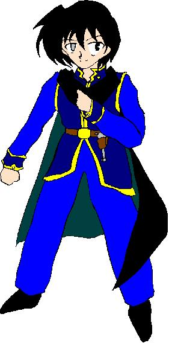

——華代ちゃんシリーズ＆いちごちゃんシリーズＷ外伝——
（ハンターストーリーランド＋α その２）
「二人のウラド」
作：Zyuka
※「華代ちゃん」シリーズの詳細については、以下の公式ページを参照して下さい。
http://www.geocities.co.jp/Playtown/7073/kayo_chan00.html
＊「華代ちゃんシリーズ・番外編」の詳細についてはhttp://www.geocities.co.jp/Playtown/7073/kayo_chan02.html を参照して下さい
※「いちごちゃん」シリーズの詳細については、以下の公式ページを参照して下さい。
http://www.geocities.co.jp/Playtown/7073/Novels-03-KayoChan31-Ichigo00.htm
こんにちわ。はじめまして。私は空 魅夜子といいます。
あなた達は、華代ちゃんって言うセールスレディを知っていますか？
皆に幸せを運ぶことを目的とした、すばらしい女の子です。
でも、そんな華代ちゃんも完璧ってわけじゃありません。
どこかで、失敗することだってあります。
そんな時は私の出番！！ ちゃんと、アフターケアをさせていただきます！
実は……同じような仕事をしていらっしゃる方々がおられると言う事なんで、私もその人たちのメンバーに加えてもらうことにしました。
だから、私のことは『ハンター３８号』と呼んでください！！
でも、私、恥ずかしがりやだから、他のハンターの皆さんには会った事はないんですよね。
まあ、いいか！
じゃあ、物語を始めましょう。
『結果を発表します！』
ジャカジャカジャカジャーーーーーン！！
スポットライトが、段上に立つ１５人の少女達の１人に当てられる！！
『投票数３２５票の内——３２４票獲得の、宮院 桜さんが第２４代目のミス葉下堕高校に選ばれました！！』
「おーほほほほほほほほほほ！！」
ミス葉下堕に選ばれた桜が高笑いをあげる。
『桜様！！ 桜様！！』
会場の男子生徒が大声で彼女をたたえる。
彼女は、まさに女王だった。
『なお、二位は残りの一票で先代ミスの鈴世 朱実さんでした。他の方々は残念ですが、ゼロ票です』
「当然だ！」
「桜様に比べれば、一目瞭然」
「だれだ？ 桜様以外に入れたのは」
あちこちでそんな声があがる。葉下堕高校の男子高校生のほとんどは桜の親衛隊だった。
女性徒達も、羨望と……嫉妬の視線を桜に向ける。
ただ１人……先代ミスの朱実だけは、憎しみの瞳を桜にむけていた。
「……あいつら……」
唯一、桜に投票しなかった男子生徒——白亜 陽平——は、あきれたような視線をまわりにいる桜親衛隊たちにむける。
「ほんの一週間前までは朱実ちゃん親衛隊だったくせに……」
その声は、回りの喧騒にかき消され、誰の耳にも届かなかった。
陽平は……実は現在を認識できないという特異体質だった。
過去なら、認識できる。過去しか、認識できない。
それは、ほんの一瞬だけ前の過去なのか、それとも、数時間……遥か過去の事なのか……
ウラドに愛されウェルザンディには嫌われている。でも、スクルドはやってくる。
彼には、二人のウラドが、まったく違う物に見えた。
彼が認識できる過去は、すべてがウェルザンディに集まってくる。ウェルザンディを見ることはできないが、すぐに新たなウラドとなって出現するのだ。
だけど、ある瞬間を境に、過去が変わってしまっている。過去が、二つあるのだ。
一つの過去には、学園のプリンセス、鈴世 朱実に恋心を抱いている自分がいる。もう一つの過去には学園の男子生徒生徒全員と共に学園のクイーン、宮院 桜の親衛隊をやっている自分がいる。
どうやら、朱実に恋をしているほうの自分が、本物だったらしい。彼女の親衛隊は桜の親衛隊に比べれば小規模な物で、自分のはそんなところに入る度胸はなかったからだ。
第一、桜の親衛隊はどこかおかしい。ガールフレンドが存在する男子生徒が『桜様』を連呼しているのはまだいい。でも、妻子ある教諭までもが親衛隊に加わってるのはどうもおかしいだろう。
彼の周りの人間達もそうだ。過去が、二つある。
一つは、平凡な過去（中には非常に興味深い過去を持つ者もいるが）、そしてもう一つの過去は、必ずといっていいほど、桜に関係がある。
そして、問題の桜……彼女の過去は一つだったが……現実にはありえない物だった。
「ありがとねぇ、皆〜〜〜♪」
ナンバー１ミスのみがつけることを許される王冠とマントをつけ、会場内を練り歩く桜。
その後ろで、準ミスの朱実が、ものすごい目つきでついてきている。
陽平は、桜がそばへきたときに、その過去を見てみた。
「あれ？」
彼女には、学園入学当時から女王として崇め奉られている過去しかなかった。
しかし、自分もそうだが、その過去はどうも本当の事とは思えない。
「…………」
桜には、隠されている過去があるのか……？
ふと、まったく関係のなさそうな人物の過去が見えた。
「………下部 晴清……」
この場に、そんな名前の人間はいなかったが……その人間の過去は、今にはつながっていない……真実の物だった。
「………」
陽平は、晴清の過去をさらにみてみようとする。しかし……
「——？」
晴清の過去は、ある少女との出会いで終わっていた。
「あの……あなたが白亜君？」
「うん？」
声をかけられた一瞬後にそれを認識し、顔を上げる陽平。そこにいたのは、準ミスの朱実だった。
「あなただけが、わたしに投票してくれたんだって？ ありがとう」
「うん、ああ……」
どうやって知ったのか………ああ、ミスコンの役員達が話しているのを聞いたのか。
陽平は、無意識下でもあっさりそういう認識をやってしまう。
「ちょっと、付き合ってくれない？」
「いいけど？」
今は葉下堕高校文化祭の昼休みだった。午前の部の最大イベント、ミス葉下堕コンテストが終わったため、皆その話題で持ちきりだ。
「さすが桜様だよな」
「ああ、ダントツの美しさだ」
「ああ、桜女王様……」
大体、こんな物だ。男子、そして一部の女子達が口々にそう言う。
そんな中、陽平と朱実は手をつないで歩いていた。誰も二人を気にする者などいない。
二人は、人気のない中庭に来ていた。
「あのさ、何のよう？」
「……あなた、だけがまともなようだから」
「まとも……？ それが普通って意味なら、僕はそうじゃないよ」
過去を認識するなんて、普通の人間にできるはずがない。
だが、朱実の答えは想像できない物だった。
「………あなたも、過去を読み取る能力を、持っているんでしょ？」
「え……！？」
すっ……っと朱実の右手が陽平の手を取る。
「私は、この右手で触った物の過去や強い思いをを読み取る事ができるの。いわゆる、サイコメトリーというやつよ」
「僕は、自分の能力のことをポストコグニションって呼んでるけど……」
「どちらでもいいわ。つまり、私の仲間、なんでしょ？」
「そのようだね。僕らは、超能力仲間ってことだ」
「ええ……その力を使えばわかるはずよ……あの桜って人が、つい一週間前にはいなかったってことが………いいえ……」
「いるにはいたけど、名前も性別も違っていた」
「ええ……彼女は、昔は下部 晴清という男だった……」
それは……陽平が桜の過去を認識した時にわかったことだった。
「ここでは、昔、いじめが行なわれていた」
朱実が、中庭の木や、校舎の壁に手を触れながらいう。
「いじめているのは、二年のグループか？ 優等生で通っている連中だが影でこんなことをしていたのか」
空間の過去を認識し、陽平が言う。
「このグループは、私の親衛隊の中心メンバーでもあったわ。本当、人間ってどこで何をやっているか、わからない物ね」
「君が、部活を始める時間までの暇つぶしでいじめていたのか……嘆かわしい」
「私がテニスを始めたら、いじめていた相手……」
「下部 晴清をここに放っておいて、テニスコートのほうへ行ってしまう」
「しばらく放って置かれた後……１人の少女が、下部に近寄ってきた」
「白い、服と帽子の小さな子供……何で小学生がここにいる？」
「わからないけど、何か小さな紙を差し出して、こう言ってるわ『何かお悩み事はありませんか』と……」
「紙には…なんか書いてあるな……『ココロとカラダの悩み、お受けいたします ………しんじょう、かよ………かな？」
「マシロ、って読むんですよ。それ」
「へぇ、マシロ、カヨ……ね」
「その女の子に、下部は何かを話しているわ。………女の子は、それについてうなづいている」
「そして、世界は一変する……僕達の知らない、もう一つの過去が現れたんだ」
「下部 晴清が消えて、宮院 桜が現れたのね……いえ……」
「変身したんだ……世界すべてが」
「冗談じゃないわ……そのせいで、私はアイドルの座から引きずりおとされれたっていうの？」
「大変だったんですね」
「まったく、過去を二つ持つって、結構つらいな」
「本当に……って、あなた誰！？」
いつの間にか、本当にいつの間にか……過去を読んでいた二人のそばに、第三者がいた。
黒いドレスを着た、小学生低学年ぐらいの眼鏡っ子！！
しかも飛びっきりの美少女！！
というのが、第一印象だった。
「君は一体、どこから現れた？」
ここで普通の人間なら、気付かなかったですまされるのだろうが……あいにくこの二人は過去が読めるのである。
数秒前までは確かにこの場にいなかった少女である。
ただ者であろうはずがない！！
「あ、私はこういうものです」
二人の戦慄を知ってか知らずか、少女は名刺を差し出した。そこには……
『真城特殊能力サービス有限会社 セールス部アフターケア課所属 派遣社員
または ハンター３８号
空 魅夜子』
と書かれていた。
「魅夜子、ちゃん？」
「ハイ！」
「アフターケアって何…？ というか、華代ちゃんって何者？」
「華代ちゃんは、世界中の人々の悩みを解決しようとがんばっている女の子です。でも、今回のようにちょっとした失敗であなたのような不幸な方を生み出してしまう場合があるんです。ですから、私がそのアフターケアを行なおうと、やってきました」
「わけわからん……が、つまり、君がすべてを元の状態に戻してくれるってことか？」
「うーん、それだと宮院さんが不幸な下部君に戻ってしまうんですよねぇ……」
魅夜子と華代ちゃんの大きな違いは、人の話を聞く所と、少しは考える、という所だろう。
しかし……いや、だからこそ、一度思いついた行動を止めることはできない。
「それじゃあ、こうすればいいんですね！！」
「へっ？」
魅夜子がバッと両手を広げる。そして、そこから圧倒的な力が放たれる！！
「うわっ！？」
「きゃっ！？」
世界が一変した。
まず最初に、自分達の服装が変わる。ありていに言えば、色が変わる。黒かった学生服が、緑色のブレザーが、変色していく。
身体のほうにも変化がある。やっぱり、色の変化が大きいか……
そして、学校も変形していく……
御伽噺のような世界にあるお城……そこに彼らはいた。
あたりから、荘厳華麗な音楽が流れてくる。
「ここは……？」
ハクアは、現在が認識できない。いや、できたとしても理解できないだろう。
突然、ファンタジックな世界に放り込まれた。これが彼らに起こったことである。
「？？？？？」
アケミは、いつの間にか豪華なドレスを身につけていた。髪の色も黒から黄金に変わっている。そして、瞳の色も黒から蒼へ……金髪碧眼、それはまさにプリンセスであった。
ハクアは、レザーアーマを身につけ、腰に鋭い剣をつけている。髪の色もアケミと同じ金色。瞳の色は赤だった。
二人は、この城の王女と、騎士だった。
彼らの前に、やさしく微笑む魅夜子がいる。彼女には変化はない。
「アケミ」
やわらかな声が、アケミを呼んだ。この城の女王、サクラだ。
「あ、お母様……って、何それ！？」
何人もの親衛隊を引き連れた女王サクラは、アケミの母という設定に、いつの間にかなっていた。
「これでクイーンのサクラさんもプリンセスなアケミさんも幸せになれたわけですね。めでたしめでたし♪」
そう言って、魅夜子はどこかへ帰ってしまう。
「ち、ちょっと待って！！」
ハクアは慌てて魅夜子が消えた空間の過去を認識する。ほんの数瞬前、彼女は空間に作ったドアを開けて出て行った。このドアは、まだ残っている……
「迷っている暇はない！！ 来るんだアケミ！！」
ハクアは、アケミの手をつかんでダッシュする。
「ちょっと！ ハクア君、私の娘をどこに連れて行くの？」
サクラがいうが、気にしてなどいられない。
何が起こっているのかまったくわからないが、これだけは言える。
華代にしろ魅夜子にしろ、かかわらないほうがよかったのだ。
「学校一つ、および全校生徒、そして教職員、そろって失踪…………行方不明…………」
「奇妙な事件ですねぇ」
「事件、なのか？ 俺には前代未聞の大事故が起こってるとしか思えないぞ………」
かつて葉下堕高校のあった更地の前に幾台ものパトカーが止まり、大勢の警官達が色々なことを調べている。
「朝比奈、上からの様子はどうだ？」
警官の１人が、上空にいる同僚に特殊な無線で声をかける。
『何にも見えないぜ。本当にこんな所に学校なんかあったのか？』
無線から、かわいらしい声が聞こえる。
「まったく……こんな異常現象、警察の畑じゃないぞ」
「でも、あなたの畑ではあるんじゃないんですか？ 三王子さん」
「どういう意味だ？ 片津」
「非常識はあなたの専売特許だって、前に朝比奈さんが言ってたよ」
「本当に専売特許なのは俺の甥だ。まあ、俺にできることは、こういったことの専門家を呼ぶことぐらいだろうな」
そう言って、警官の１人が携帯電話のボタンをプッシュし……
バタン！！ ドタドタドタ…………
「は？」
さっきまで、何もなかった空き地の上に、何かが落ちている。
二人の人間だ。派手な金色の髪を持った、少女と少年………
「ここは……」
「どこ……？」
二人は、きょろきょろとあたりを見渡し……そこが、学校すらない物の、見慣れた場所であることを確認する。
「アケミ……」
「ハクア……」
「僕達、帰ってこれたんだ………」
「そのようね………」
やがて……茫然自失状態だった二人は、お互いに近づきあい………
「よかったよ〜〜〜！」
抱き合って泣き始める。
「なんなんだ一体……」
「さあ…？」
警官達の視線を気にせずに泣きつづける二人。
「なんだかわからんが、あの二人が今回の事件の真相を知っていそうだな。……だけど、やっぱり専門家を呼んだほうがよさそうだ」
警官は、プッシュしていた番号に電話した。
「あ…銀河？ 俺、式だけど、ちょっと時間をもらえない？」
そういえば、白亜と朱実以外の生徒はどうなったのだろう？
「空 魅夜子か。………華代だけでも手一杯だというのに、またとんでもないやつが現れたみたいだな」
報告書に目を通しながら、ハンター組織のボスはそううめいた。
「今回、僕らは直接かかわることができませんでした。それゆえに、結果しかわかっていませんが、彼女が華代レベルの能力者であることは間違いないでしょうね」
友人の警官から電話を受け、真っ先に現場に行った７号が、報告書提出と報告を、いっしょにやっている。
「これからも、性転換被害者が増える、ということか……また新たなハンターを増やさなければいけないな……」
「ちょっといいでしょうか……」
「うん？」
「一つ、推測を述べさせていただきたいのですが」
７号は、ポケットから一つの手帳を取り出す。
「今回、彼女は学校ひとつを、城に変化させて異世界に叩き込むなんて大技を使いました。その際、中にいた人間達は、貴族や兵士、メイドなどに変身させられていたわけですが……」
「ふむ……コスプレ知識も華代並と言う事だな」
「ところが、誰一人として性転換処理を施された人間がいないんですよ」
「……！」
「まだ彼女が起こした現象は二例しか報告されていませんが、どちらも、彼女が性転換現象を引き起こしたというよりは、華代が起こした現象を、さらに拡大させているだけで、性転換をさせていないんです」
「どういう意味だ」
「もう少し資料が集まらないと、ちゃんとしたことはいえないんですが……空 魅夜子という少女は、他人や物を変身させる力はあっても、性転換現象をおこす力は持っていないのかもしれません」
「それじゃ、ハンターの資格なしってことじゃないか！ 何でナンバーを持っているんだ！？」
「たぶん、それは、華代がセールスレディをごっこでやっているのと同じく、魅夜子もハンターをごっこでやっているからでしょう。遊びといえど、彼女らのそれは特殊能力によって引きおこされる現象が付随しますので、回りがそれにあわせてしまうんです」
「それで、何度消しても組織のコンピュータに彼女の名前が入ってしまっているのか……」
「はい、そうだと思います」
「どちらにしろ、厄介なことには変わりないな……」
「そうですね……では、失礼します」
「ああ、ご苦労だったな、７号……」
７号が出て行ったのを確認したボスは、窓際に立つ。
「一度、あってみたいものだな。その空魅夜子………ハンター３８号に………」
それには、それ相応の覚悟が必要だろう。だが、虎穴にはいらずんば虎児を得ずというではないか……
ボスはそう考えていた。
＋α

□ 感想はこちらに □